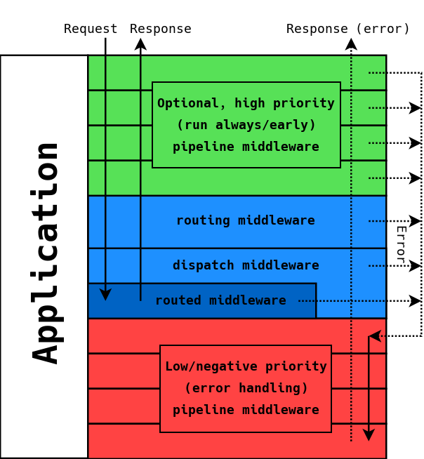
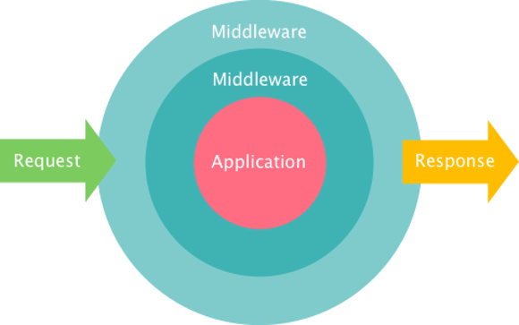

Your browser doesn't support the features required by impress.js, so you are presented with a simplified version of this presentation.
For the best experience please use the latest Chrome, Safari or Firefox browser.
Modernize your app
with
Zend Expressive
Jan Burkl Solution Consultant Zend, a Rogue Wave Company jan@zend.com // @janatzend
What's the problem?
Huge Code Base
Complex Business Logic
Legacy Frameworks
No Time
What do you want?
The hottest JS Framework
(mobile) App
3rd Party Systems
API
Zend Expressive

The Application acts as an "onion"

"The terminology "pipeline" is often used to describe the onion. One way of looking at the "onion" is as a queue, which is first-in-first-out (FIFO) in operation. This means that the first middleware on the queue is executed first, and this invokes the next, and so on (and hence the "next" terminology). "